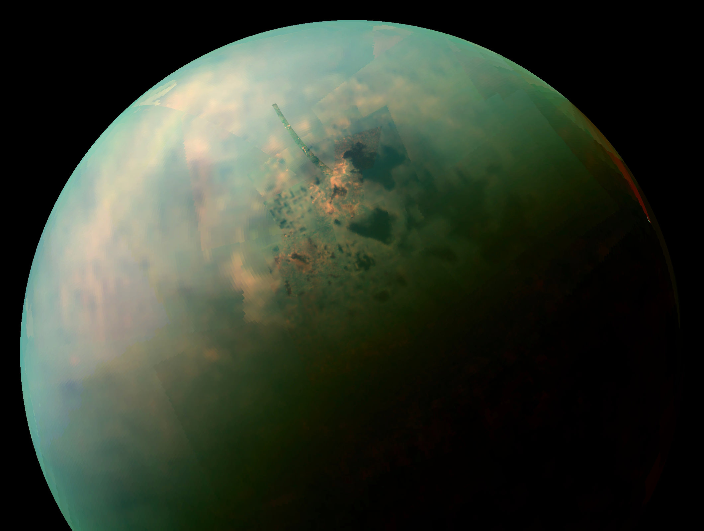

MIMAS
The Saturn System
Distance: 1.2
AUPopulation: ???
Mimas
was discovered in 1789 by William Herschel. It is named after Mimas, a son of Gaia in Greek mythology.
It is the smallest astronomical body that is known to still be rounded in shape because of self-gravitation.
999.990$
one way ticket

TITAN
The Saturn System
Distance: 0.57
AUPopulation: ???
Titan
is the largest moon of Saturn and the second-largest natural satellite in the Solar System.
It is the only moon known to have a dense atmosphere, and is the only known object in space other than Earth on which clear evidence of stable bodies of surface liquid has been found.